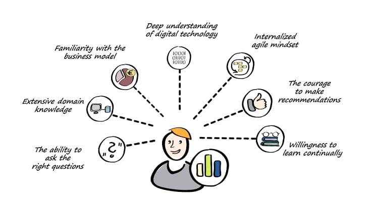

Programming, Web and App Development
Programmer adalah penulis dan penguji kode yang digunakan untuk membuat program perangkat lunak. Web developer adalah profesi yang bertugas untuk membuat aplikasi dan website. Pilihan karir ini cukup prospektif karena semakin lama, semakin banyak perusahaan yang ingin membuat website. Application Developer adalah seseorang yang memiliki tugas untuk mengembangkan aplikasi, mulai dari tahap analisis permintaan klien, membuat perancangan desain, membuat aplikasi dan melakukan pengujian aplikasi yang telah selesai dibuat.
Digital Business Analysis
Tugas Business Analyst yaitu membuat analisis bisnis secara terperinci, menguraikan masalah, dan menyediakan solusi untuk mengembangkan bisnis, memahami kebutuhan pelanggan dan tujuan bisnis, memberikan saran strategis mengenai penggunaan teknologi untuk mencapai tujuan, berkolaborasi dengan tim developer, mendesain sistem dan it network, serta memastikan arsitektur dan fungsionalitas yang tepat, mendukung implementasi teknologi baru, memberikan bantuan untuk masalah teknis, menganalisis dan merevisi sistem yang ada serta menyarankan perbaikan, menyajikan laporan yang tepat dan terstruktur.
Digital Design and Data Visualization
Data Visualization adalah representasi dari data-data bisnis yang sangat kompleks dan ribet, yang kemudian diubah ke dalam format grafik yang lebih sederhana. Tujuan utama dari visualisasi data adalah untuk mengkomunikasikan informasi secara jelas dan efisien kepada pengguna lewat grafik informasi yang dipilih, seperti tabel dan grafik. Visualisasi yang efektif membantu pengguna dalam menganalisis dan penalaran tentang data dan bukti.